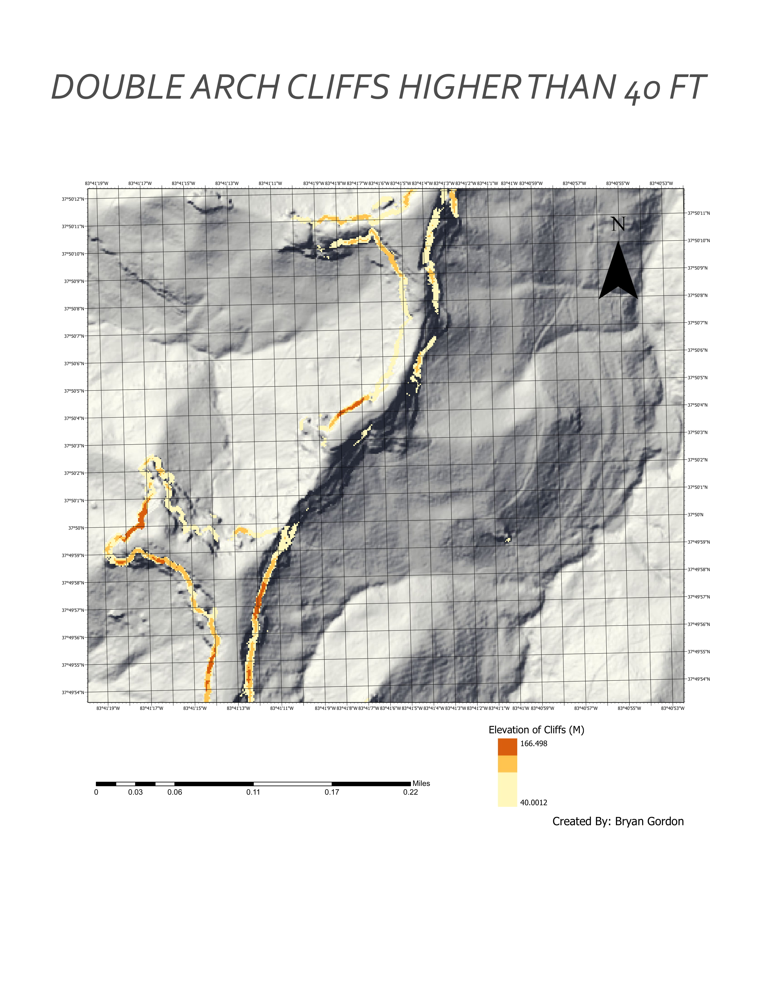
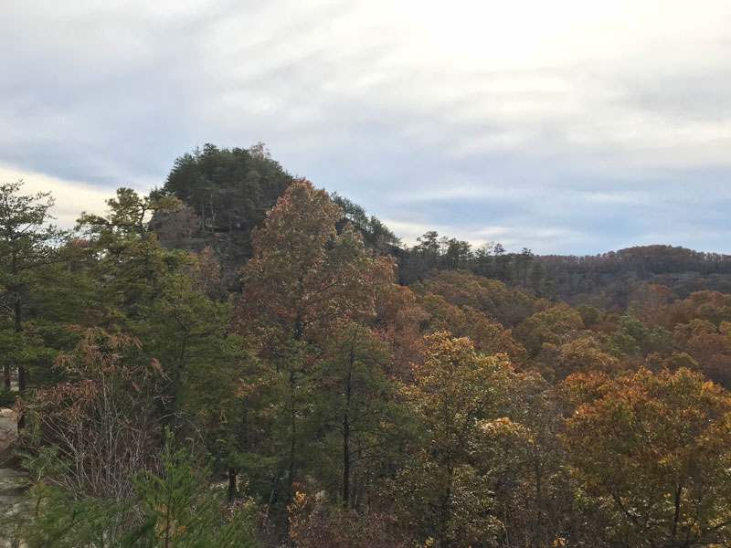

Double Arch Info and History
Advanced GIS - University of Kentucky Geography
Link to my point cloud visual of Double Arch.

Small Summary about The Double Arch
The Double Arch is located near the central area of the Red River Gorge National Forest Doulbe Arch is located near a neaby drainage syste on the northern side of the mountainous area. The geological feature is a sadstone, where the inside of an already weatherd arch, weathered further. Unstable straigraphy and lithology caused the second feature to former. There is a past history of uplift in the Red River Gorge from the Cumberland Plateu, possibly helpling the weathering process of this double arch.
Tools used in this project
- ArcGIS Pro was used to process lidar data and produce elevation derivatives.
- Data is shown on Mapbox web map with geolocation services enabled.
The Journey it Took
On a cool Autumn morning, the Red River Gorge was bound to get hiked. Particularly a fomous landfrom of the name Double Arch was set in a agenda. If you want to get some excerise no matter how challenging some may think, the trail up to the arch is the place for it. The trail has a 640 foot elevation change and can benefit all. Intially there is around a 2 mile walk, on slighly curved paths, but then going down into those zig sagging wet stairs may scare one, who is not used to the challenge. The trail maneuvers through trees, up and down outgrown roots, until you reach the peak. Seemed to be made of sandsotne, the slippery arch showcased why it was called the Double Arch.
